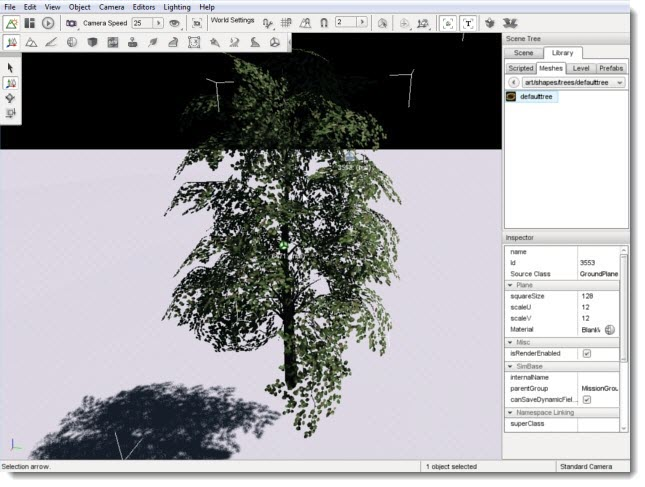
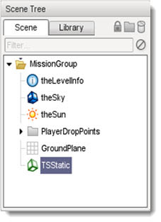
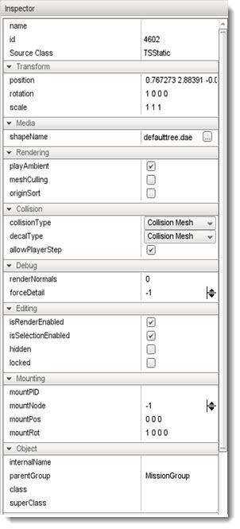

Introduction
3D models, referred to as shapes in these tutorials, make up most of
the objects in your game. This includes players, items, weapons,
vehicles, props, buildings, and so on. Currently Torque 3D supports
three model formats: COLLADA, DTS, and DIF.
COLLADA: Short for COLLAborative Design Activity.
COLLADA is emerging as the format for interchanging models between
DCC(digital-content-creation) applications. The file format is .dae (digital asset exchange). The data is stored in an open standard XML schema, which means it can be read and tweaked manually if need be.
DTS: Short for Dynamics Free Space, is the native, binary file format used by Torque to store shape (geometry, LOD, bone, and animation) data. DTS exporters exist for several 3D modeling packages such as 3ds Max, Maya, XSI, Blender, and Milkshape3D.
DIF: Short for Dynamix Interior File, this
is another proprietary format developed during the Tribes days and has
survived through Torque. DIFs (also called Interiors) are primarily
used for buildings or other enclosing structures. While the binary
space partition (BSP) functionality is useful, using DTS or COLLADA
files with Polysoup collision enabled is the preferred method and will save you time on asset
generation.
Adding A COLLADA Model
The ability to load and render COLLADA models (.dae) is a new Torque
3D feature. The process of adding a COLLADA shape is identical to adding a DTS. You will first need to know where your .dae file is located.
Again, you will open the Library->Meshes tab. Navigate to the
directory containing your COLLADA model (.dae). If you hover over the item, you will get a brief
file description.

Go ahead and double-click on the object. The file should load
extremely fast, but you may not be able to see it right away. Pull your
camera up and away from its current location to see the giant shape
which has been added.
(click to enlarge)

All of the geometry and texture information
is readily available in this single format. What's more, nearly every
major 3D modeling application is able to export directly to the COLLADA
format so you can import similarly complex objects as you see here.
Shape Properties
Now that we have added an object to the Scene, lets look at properties that the object has. Click on the Scene tab, then select the TSStatic object.

Object properties are displayed in the pane below:

Conclusion
While asset creation is the first step, importing 3D models into
your level is a major milestone. The flow goes both ways, however. Once
you have added a model to your scene, it can dynamically reflect any
changes made to the actual file containing the data. If you re-export
an existing COLLADA model from an application, your game object will
automatically update to show the changes.
The rest is simply level design. How, where, and why you
place objects is up to you.
|
{kind=link}